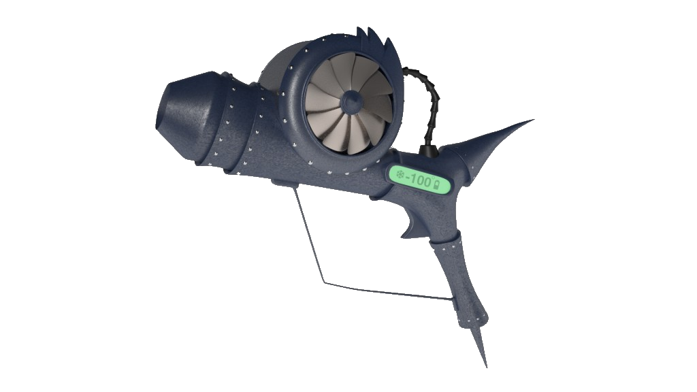

The Freeze-inator is the perfect product for all of your rapid glaciation needs! the Freeze-inator uses molecule de-seperation technology to instantly stop all movement in the majority of molecules, bringing the temperature to very near 0 Rankine in a localized area. The product can freeze from 60F to 0F in under 3 seconds, with most materials being frozen within 1 second. The battery life has recently been improved by reducing ionizing wave form collapse in the magnestrate condensor to give increased efficiency, allowing for continuous use for over 3 hours with a 1 hour charge time. This product has been tested thoroughly to ensure maximum quality standards and to reduce the risk of unintended rapid self deconstruction to a mere \(\left(5+\sqrt{19}\right)\left(5-\sqrt{19}\right)\sqrt[3]{\left(7-\sqrt{22}\right)\left(7+\sqrt{22}\right)}\)% chance of critical failure.
The Freeze-inator has 2 settings, tight beam, and broad ray. The tight beam is for pinpoint accuracy, freezing an area of radius 15mm/foot of distance away from the target. This is meant for accuracy, to be able to freeze a tiny area while leaving the rest of the are unaffected. The second setting is the broad ray, this will target an area of radius 1.5 meters per foot, used for freezing large areas. This is the much more common usage of the product, and will freeze slightly slower, taking ~5 times the time it takes to freeze on the tight beam setting. The time figures above are based on this setting. our product uses molecule de-seperation technology to force the molecules to have a much stronger attraction to each other, causing less and less movement, until the molecules are completely still and unable to move
disclaimer: D.O.O.M.S.D.A.Y. Inc does not guarantee the reliability of the product more then the figure stated above. This D.O.O.M.S.D.A.Y. Inc product comes with a 60 day accidental damage warranty. D.O.O.M.S.D.A.Y. Inc does not condone the use of this product on any living beings, and doing so will void the warranty. Any attempt to take the device apart, including removing the battery cover for the purposes of charging the device, will also void the warranty on the product.
